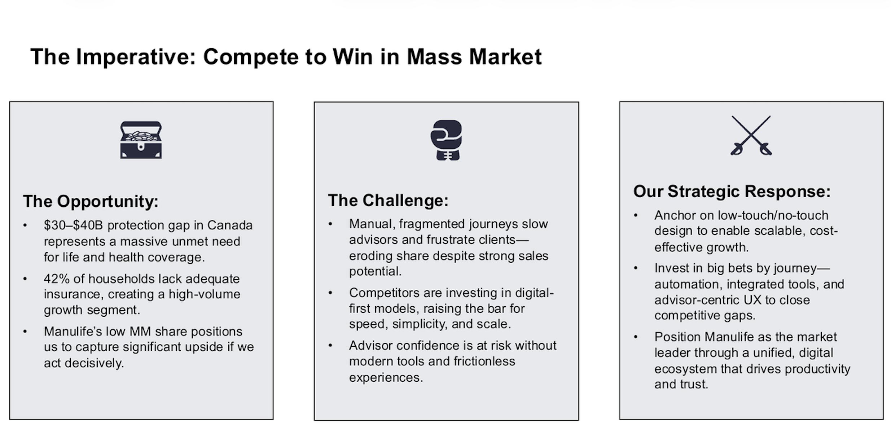
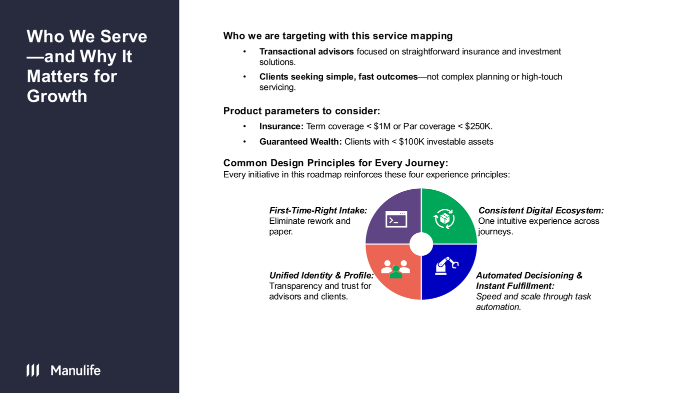
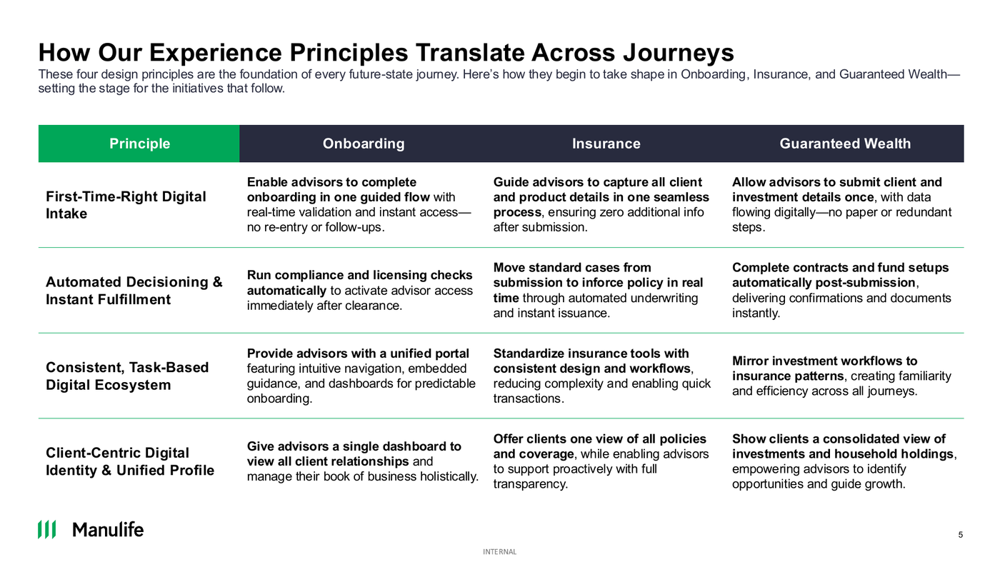
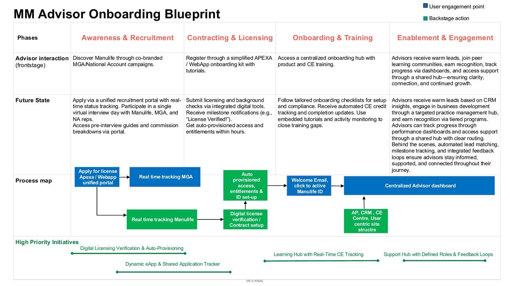
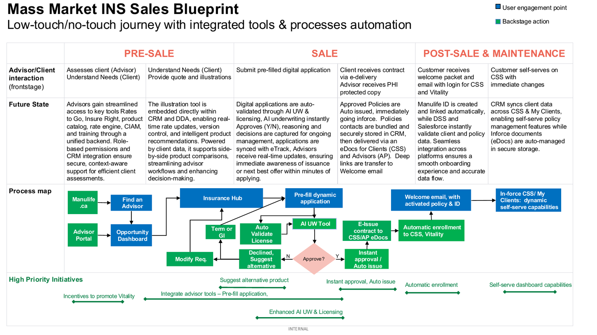
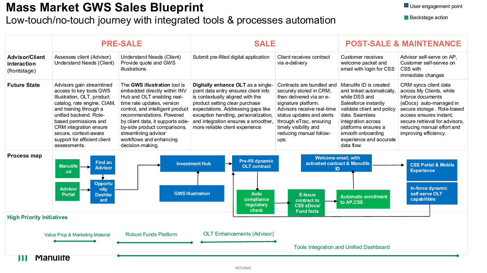
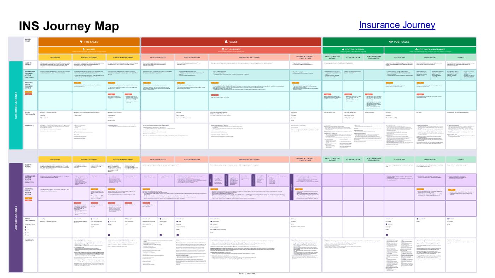
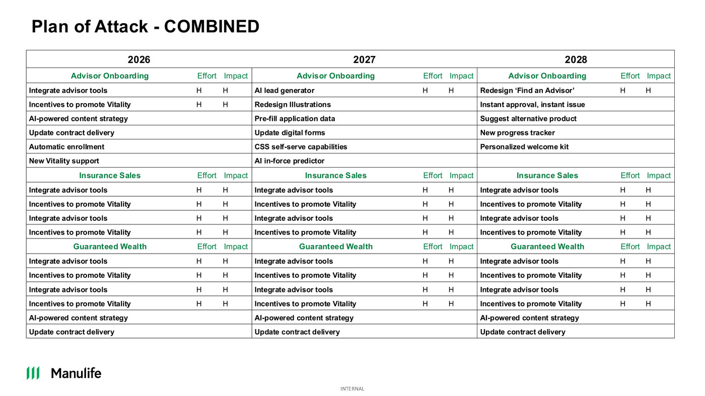

Context &the Imperative
Manulife's mass market segment — Individual Insurance and Guaranteed Wealth — is a critical growth frontier. Yet current journeys are manual, fragmented, and friction-heavy , eroding advisor productivity and client satisfaction at the very moment competitors are pulling ahead on digital execution.
With a $30–$40B life insurance protection gap in Canada and 42% of households lacking adequate coverage, the demand is there. The problem is Manulife's current operational model cannot scale to capture it. Manual underwriting, static PDF forms, disconnected portals, and high NIGO rates are costing share — and advisor trust.
Competitive benchmark data is stark: iA Financial offers 85% end-to-end digital submission in under 9 minutes . Manulife ranks #5 on advisor perception scores for digital tools — 7.5 vs iA's 8.1. That gap is not a technology footnote; it is a direct driver of which carriers advisors choose to do business with.

Strategy & Design Principles
The roadmap targets a specific segment: transactional advisors focused on straightforward products — Term coverage under $1M, Par under $250K for insurance, and clients with under $100K investable assets for GWS. Speed, simplicity, and digital self-sufficiency are the design imperatives.
Every initiative across all three streams is anchored on four common design principles — creating a coherent experience architecture rather than a collection of point-solutions. The goal is a unified digital ecosystem where the same design logic governs onboarding, insurance, and wealth.
Competitive analysis confirms that digital tools rank among the top 4 drivers of advisor perception (APS). Closing the gap is not just an operational improvement — it is a prerequisite for retaining advisor trust and capturing mass market share before competitors extend their lead.
Research grounding: the team partnered with Havas to map current-state journeys across 15+ stakeholder interviews, workshops, and review of existing blueprints — establishing a rigorous baseline before designing the future state.
First-Time-Right Digital Intake
One guided flow — no re-entry, no paper, no follow-up questions. Real-time validation eliminates errors at submission.
Automated Decisioning &Instant Fulfillment
Standard cases move from submission to inforce policy in real time. No manual intervention required in the straight-through path.
Consistent Digital Ecosystem
Same design logic across insurance and wealth. One login, mirrored patterns, intuitive navigation regardless of product line.
Unified Identity &Profile
Advisors and clients see a single consolidated view — policies, investments, holdings — enabling proactive, transparent support.


Future-State Journey Blueprints
Three parallel service blueprints were designed — each with advisor/client frontstage interactions, backstage orchestration actions, gaps to fill, and prioritised initiatives. Blueprints were validated by 30+ SMEs across Onboarding, INS, and GWS before sequencing into the roadmap.
From fragmented sign-up
to automated activation
The current experience spans APEXA, the Manulife web app, DSS, Lotus Notes, and the Advisor Portal — with no shared data layer, manual license validation, and high NIGO rates on contracting. Advisors are unsure whether to contact Manulife or their MGA for support, and MGAs have no visibility into advisor progress or CE status.
The future state consolidates the entire lifecycle — awareness through enablement — into a single digital platform with auto-provisioned access, automated license validation, and a centralized advisor dashboard .
Recruitment
Unified portal with real-time tracking
Advisors apply via a single portal with live status updates. Commission structures and timelines visible before the offer stage. Single virtual interview day with Manulife, MGA, and National Account reps.
Licensing
Single background check &automated license validation
Credentials submitted once; system validates automatically against regulatory databases. Milestone notifications trigger auto-provisioned access and entitlements within hours — not days.
Training
Centralized learning hub with real-time CE tracking
Tailored checklists, embedded tutorials, automated CE credit syncing, and activity monitoring. Role-based dashboards for both MGAs and advisors eliminate information overload.
Engagement
CRM-driven leads, recognition, and support hub
Warm leads matched to advisor readiness via Salesforce analytics. Smart routing for support queries — clear escalation paths between MGA and Manulife, with integrated feedback loops.

From manual application
to instant auto-issuance
The insurance journey suffers from fragmented quoting tools, static PDF applications, and a manual underwriting loop that creates communication chains between advisors, case coordinators, and underwriters with no shared tracker. Vitality is not used as a value differentiator because advisors associate it with onboarding friction.
The future state is a low-touch / no-touch insurance hub — pre-filled dynamic applications, AI underwriting with instant approval and auto-issuance for qualifying Mass Market policies, and automated client setup into CSS and Vitality from the moment a policy goes inforce.
Unified advisor tooling — CRM-integrated quoting &illustrations
Advisors access rates, InsureRight, product catalog, and illustrations through one backend. The illustration tool embeds within CRM and DDA — real-time rate updates, version control, side-by-side product comparison powered by client data.
Pre-filled dynamic application + AI underwriting
Known client data pre-populates the application. Real-time validation at submission. AI UW instantly approves or declines — reasoning captured for ongoing management. On decline, the system automatically suggests an alternative product offer.
Auto-issuance, auto-enrollment, and self-serve CSS
Approved policies auto-issued instantly. Manulife ID created and linked automatically. Contracts delivered via eDocs. Welcome email confirms activation. Clients self-serve in-force changes — no static PDF forms, no manual processing.

From fragmented OLT
to unified investment platform
GWS faces a compounding set of challenges: 40% of OLT capabilities remain offline, advisors prefer paper due to poor training and frequent outages, and there is no single view of client investments. iA has gained GWS market share while Manulife lost 2 pts YoY — a direct consequence of digital underinvestment.
The future state centers on fully digitizing OLT as the single point of data entry , embedding a GWS illustration tool within the Investment Hub, and building a CSS mobile portal that enables clients to self-serve renewals, top-ups, and fund management.
GWS Illustration Tool — embedded, CRM-powered product comparison
Illustration tool feeds directly into OLT with real-time rate updates, version control, and intelligent product recommendations powered by client data. Side-by-side fund comparisons reduce decision time and improve product fit.
Digitally enhanced OLT — single-point data entry with auto-validation
Client data entered once, contextually aligned to the product. Built-in NIGO checks, live compliance validation, full advisor visibility into submission status. Eliminates the indexing errors and manual rework that dominate the current experience.
CSS Portal &Mobile — gamified, omni-channel self-service
Clients view accounts, download statements, track fund performance, and manage renewals independently. Gamified engagement encourages asset growth and shares progress with advisors. CRM syncs across MyClients and eDocs with role-based access.

Current-State Research
Partnering with Havas, the team conducted 15+ stakeholder interviews across Product, Marketing, Underwriting, Operations, Sales Enablement, Vitality, and CX — producing current-state journey maps that provided the factual baseline for future-state design decisions.
Stakeholder Interviews
15+ interviews capturing the full current-state experience from advisor and client perspectives across all three journey streams.
Materials Review
Existing journey maps, blueprints, and CX satisfaction metrics integrated to establish an evidence-based baseline.
Journey Map Workshops
Group workshops with 30+ SMEs to validate findings, add missing context, and align cross-functionally before future-state design.



Plan of Attack 2026–2028
Initiatives are sequenced across three years — scored by Effort and Impact — with high-impact foundational work front-loaded in 2026. High-effort platform bets are staged into 2027–2028 once core infrastructure is in place, enabling compounding velocity across streams.

Expected Outcomes
Advisor Productivity
Unified tooling eliminates duplicate data entry, session timeouts, and fragmented logins. Advisors spend time selling — not navigating disconnected systems or chasing NIGO corrections.
Market Share Recovery
Closing the APS digital tool gap vs. iA (7.5 → 8.1+). Recapturing Insurance and GWS share eroded by competitors with superior digital execution and advisor experience.
Straight-Through Processing
100% of qualifying Mass Market policies eligible for AI underwriting and auto-issuance — matching and exceeding iA's 85% end-to-end digital benchmark.
NIGO Elimination
Pre-filled applications with real-time validation remove the root cause of Not In Good Order submissions across both Insurance and GWS — slashing rework and internal processing cost.
Client Self-Service at Scale
Automatic CSS and Vitality enrollment on policy activation. Clients arrive in-ecosystem ready to self-serve — reducing advisor support burden and call centre volume post-sale.
Scalable Growth Model
A low-touch / no-touch digital ecosystem that grows Mass Market volume without proportional growth in operational cost — positioning Manulife as the market leader for transactional advisors.
Closing digital gaps is non-negotiable
to win advisor trust and Mass Market share.
This roadmap is not an incremental improvement program — it is the foundational shift required to compete with carriers who have already made the digital investment. The window to act decisively is now, while Manulife's brand strength still gives advisors a reason to stay.